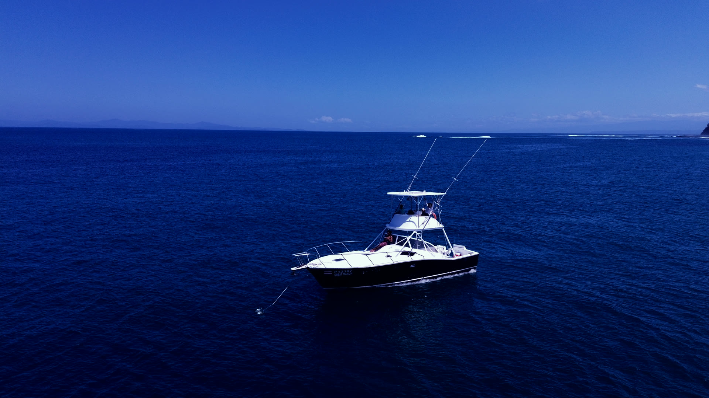

Great Marlin
Private sportfishing charter · Herradura Bay · Costa Rica
Some boats are named. This one was earned.
An hour out, the floor is a mile down.
The water turns to ink. The riggers go up.
[ 09° 38' 43" N · 84° 39' 35" W ]
Scroll
The Great Marlin is out of Herradura, on the stretch of Pacific that releases more sailfish than almost anywhere on earth.
The seafloor falls away fast here, and the big water starts where other coasts are still wading. We run it year round — billfish released, meat fish kept, weather respected.
Set up the way a fishing day actually runs.
A tuna tower for finding birds and bait. Outriggers for a wide spread. An open cockpit with room to move when something big eats.
Below deck — berths, a galley sink and a head with a real door. Kids nap, someone gets out of the sun, and a full day offshore stays comfortable.
- 01Pacific sailfishDec — Apr peak · Jun — Aug second runThe reason this coast is famous, and the fish we plan the day around.
- 02Yellowfin tunaAug — Oct peak · from MayFound under the spinner dolphin. Sashimi at the dock.
- 03Mahi mahiNov — Dec run · green seasonColour, acrobatics, dinner.
- 04Blue marlinJul — Oct · offshore · a bonusThe real fishery is sixty miles further out. On a day trip, a blue is luck.
- 05WahooNo reliable seasonThe fastest strike in the spread. We won’t print a calendar we can’t defend.
- 06RoosterfishAll year · inshoreThe signature inshore fight. Released every time.
- 07Cubera snapperAll year · Jul — Dec strongestA brawler that lives in the rocks and knows it.
- 08Jack crevalleAll year · inshorePound for pound, the meanest pull of the day.
Full day
Offshore · past the drop · sailfish water
Lunch · beer · water · fruit aboard
$1,750Whole boat · up to sixAsk on WhatsApp
Half day
Mornings · inshore + nearshore · roosterfish, cubera, jacks
Beer · water · fruit · snacks aboard
$1,350Whole boat · up to sixAsk on WhatsApp
Surf day
A reef we don’t name · white sand · empty on purpose · boat access only
Provisioned like the full day — lunch · beer · water · fruit
$1,250Up to six · six hoursAsk on WhatsApp
Tortuga Island
A day at the island · white sand · water clear enough to snorkel · no rods
$1,550Whole boat · up to eightAsk on WhatsApp
Sunset cruise
The last hour of light · the coast from the water · an easy evening run
ON REQUESTAsk on WhatsApp
Every price is whole boat, not per head — nobody else shares your day. Fishing days seat six, each guest beyond $100. Surf and island days run to ten, each guest past the base $40.

Put a date on the water.
Message us. Dates, crew, what you want to catch — answers come fast.
Half now. The rest on the dock.
- A 50% deposit holds your date. The balance is settled the day of the trip.
- Cancel more than 14 days out and the deposit comes back to you.
- Cancel inside 14 days and the deposit is kept — the date was held for you.
- Rain or shine, the boat runs. Weather does not cancel a charter here — rain on this coast is an afternoon event most of the year, and the fish are already wet. The only thing that calls off a day is genuinely severe weather — the kind that closes the port.